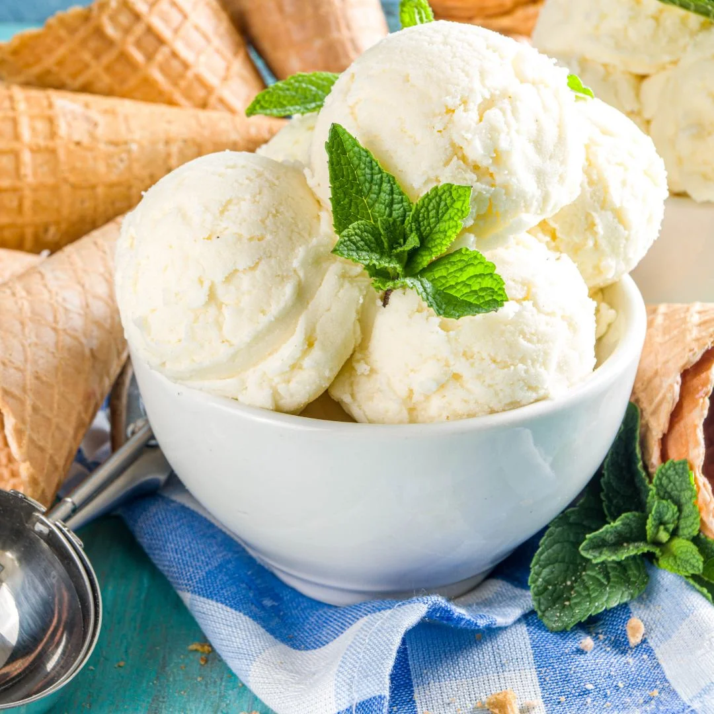

Vanilla Ice Cream

Ingredients
- 2 cups heavy cream
- 1 cup whole milk
- 3/4 cup granulated sugar
- 1 tablespoon pure vanilla extract
- Pinch of salt
Instructions
- In a mixing bowl, whisk together heavy cream, whole milk, granulated sugar, vanilla extract, and a pinch of salt until sugar is dissolved.
- Pour the mixture into an ice cream maker and churn according to the manufacturer's instructions, usually about 25-30 minutes, until it reaches a soft-serve consistency.
- Transfer the churned ice cream to a freezer-safe container and freeze for at least 4 hours or until firm.
- Scoop and serve your delicious homemade vanilla ice cream!
Enjoy your ice cream!